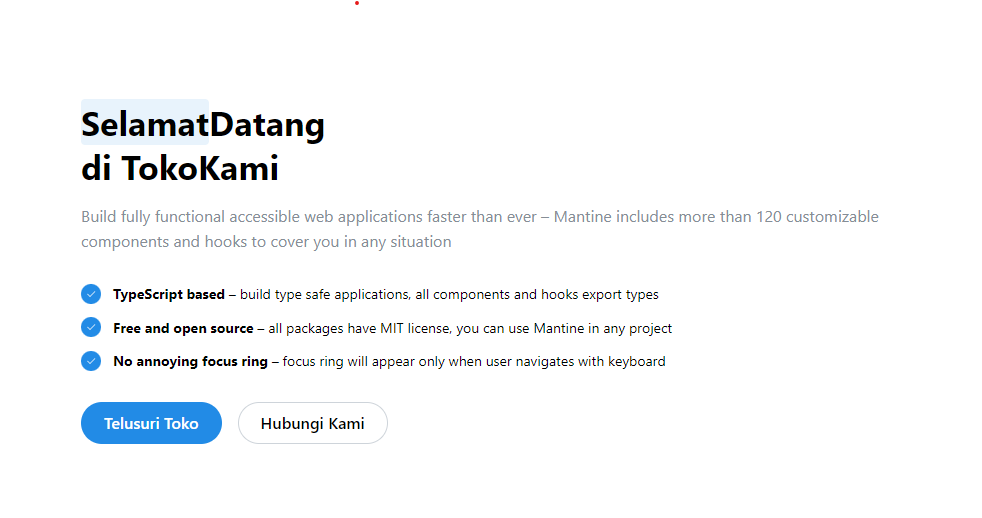
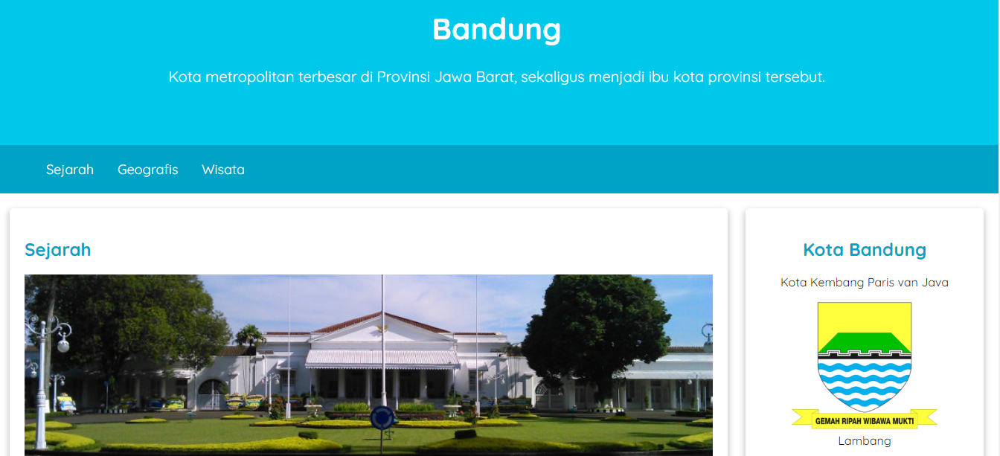
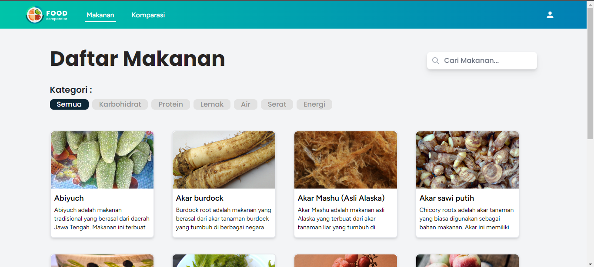

Proyek Pemrograman

Webgis-Wisata Religi
pembuatan website untuk pemetaan lokasi wisata religi di provinsi jawa timur menggunakan grass GIS untuk membuat peta dan di deployment menggunakan laravel. Lihat Code Program
×


Toko Online
dalam pembuatan website tersebut menggunakan reactJs Lihat Code Program
×


Website Landing Page Profile Kota Bandung
proyek yang saat buat untuk ini menggunakan HTML&css Lihat Tampilan atauLihat Code
×


Food Comparator
proyek ini merupakan hasil pengembangan dari Project BaseLearning menggunakan TALLStack Lihat Tampilan
×